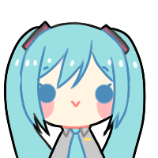

Sobre PIAPRO
esta página pertenece al portal web sobre "Personajes Piapro" y ha sido inspirada por la labor de Crypton Future Media, INC. La palabra "Piapro" se origina a partir de una abreviatura de la pronunciación japonesa de "Peer Production" y expresa el deseo de que los usuarios que tienen diversos talentos y conocimientos compartan estas cualidades entre sí y creen algo nuevo juntos.
Crypton Future Media Inc.
Crypton Future Media Inc. es una empresa japonesa que ha dejado una marca significativa en el mundo de la música y la tecnología a través de su contribución al desarrollo de Vocaloid, un software de síntesis de voz que ha revolucionado la forma en que se crea y se experimenta con la música. Fundada en 1995 por Hiroyuki Itoh, Crypton Future Media ha estado a la vanguardia de la creación de contenido vocal digital durante más de dos décadas. Además, la empresa ha establecido una empresa subsidiaria llamada Piapro, que desempeña un papel fundamental en la promoción y gestión de la cultura Vocaloid.
Hiroyuki Itō
Hiroyuki Ito (伊藤 裕之), es un productor, director y diseñador de juegos japonés que trabaja para Square Enix. Es conocido como el director de Final Fantasy VI (1994), Final Fantasy IX (2000) y Final Fantasy XII (2006) y como creador del sistema Active Time Battle (ATB) en la serie Final Fantasy.

PIAPRO
La empresa subsidiaria Piapro no solo se trata de la música, sino que también es un lugar donde los artistas pueden colaborar en proyectos multidisciplinarios. Los ilustradores pueden diseñar personajes, mientras que los músicos pueden componer canciones para dar vida a esos personajes. Esta sinergia creativa ha dado lugar a una amplia variedad de productos, desde música y vídeos musicales hasta figuras de acción y merchandising. Además, Piapro es una plataforma que promueve la colaboración abierta y la creación compartida. Los usuarios pueden permitir que otros utilicen sus creaciones como base para nuevos proyectos, fomentando un espíritu de comunidad y colaboración. Esto ha llevado a una rica diversidad de contenido, donde cada creador aporta su talento único a la mezcla. Piapro también ha sido una plataforma que ha ayudado a los músicos independientes y emergentes a encontrar su audiencia y a compartir su música con el mundo. Es un espacio donde la creatividad no tiene límites, y donde la comunidad creativa se apoya mutuamente.